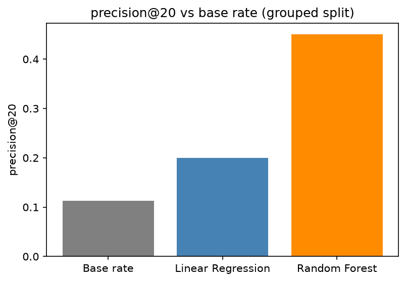
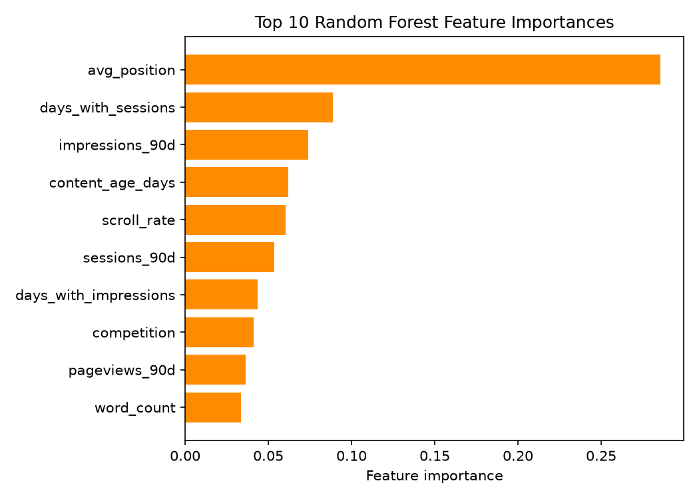
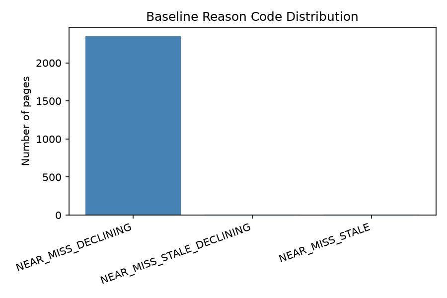
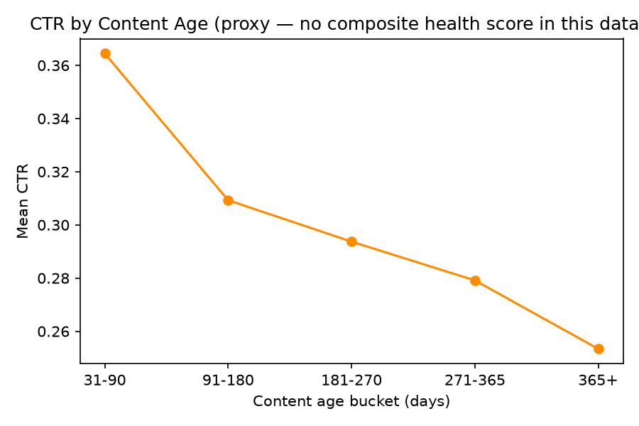

We built a scoring model on 30,000 pseudonymized pages across 32 FlyRank clients, using a
90-day trailing window of search performance data. A transparent rule-based baseline and a
Random Forest regressor were evaluated on a client-grouped train/test split to prevent
leakage, with Random Forest achieving roughly 4x the naive base rate at
precision@20 — a meaningful but imperfect improvement, since the model has no awareness of
commercial value (cpc/search_volume were excluded to prevent label
leakage). The result is two decision-support queues — one value-aware but narrow in scope,
one broader but value-blind — designed to help editors prioritize limited refresh capacity,
not to replace their judgment or predict outcomes.
Which pages should a content team prioritize for refresh work first? We built a scoring model that ranks webpages by combining how much they're declining in search performance with how commercially valuable they are, so FlyRank's content/SEO editors can prioritize limited refresh time on the pages most worth fixing. A wrong recommendation costs wasted editor hours on a low-value page, or worse, erodes the team's trust in the system.
Source: the FlyRank internship starter dataset — 30,000 rows, one row per pseudonymized page, 32 clients, trailing 90-day window.
Excluded: impressions_last_30d, clicks_last_30d,
sessions_last_30d, impressions_prev_30d,
clicks_prev_30d, sessions_prev_30d (window overlaps the label's
trend calculation); cpc, search_volume (direct multiplicative
components of refresh_score); trend_pct,
trend_direction (label-derived); provider_used,
model_used (unreliable metadata).
trend_pct (no prior-period baseline — likely new pages).cpc/search_volume, which feed directly into the label.
Stated openly: (1) refresh_score is a reasonable proxy for editorial priority,
though never validated against actual editor judgment; (2) a single 90-day snapshot is
representative enough to rank pages; (3) the top-10% is_priority cutoff reflects
realistic editor capacity (~20-50 pages per cycle); (4) client-level differences are the
dominant hidden confound, which is why every split in this project is grouped by
client_id.
Final feature set (34 columns after one-hot encoding): engagement/traffic aggregates
(impressions_90d, clicks_90d, sessions_90d, etc.),
content descriptors (content_type, main_intent,
word_count, competition_level), ranking/visibility signals
(avg_position, ctr, engagement_rate,
scroll_rate), and freshness/age fields (content_age_days,
days_since_last_update).
refresh_score = trend_pct_dampened × cpc × search_volume, computed only for
pages with a valid trend signal. is_priority is binary: 1 if a page's
refresh_score falls in the top 10% of that filtered population, 0 otherwise.
This is a defined proxy, not an observed outcome.
A transparent rule: pages in the near-miss zone (avg_position 8-20) that are
declining and/or stale are flagged with one of three reason codes, scored by
value × rank.
Evaluating this baseline against is_priority produced a precision@20 of
1.0 — not evidence of a good rule. Both share the same core ingredients
(cpc × search_volume × decline), making the comparison near-circular. We
report this honestly: the baseline's true quality was never independently validated.
All models evaluated on a GroupShuffleSplit (80/20) grouped by
client_id. A random-split comparison was run to confirm this mattered: results
were close at k=20 by coincidence but diverged clearly at other k values. Top feature
importances were checked for single-feature dominance — none found. No label-derived column
appears in the final feature set.
| Method | precision@20 | Note |
|---|---|---|
| Base rate (random) | 0.113 | Naive floor |
| Baseline rule | 1.0 | Invalid — circular with is_priority |
| Linear Regression | 0.20 | ~1.8x base rate |
| Random Forest | 0.45 | ~4x base rate |

Of Random Forest's top 20 predictions, 11 were misranked. Manually reviewing these cases
revealed a consistent pattern: pages with very low cpc (often <$0.15) and
recent update dates were still ranked at the top. Root cause: the model has no commercial-value
signal — cpc/search_volume were correctly excluded as leakage, but
this leaves the model structurally unable to distinguish a high-value declining page from a
low-value one.

cpc/search_volume excluded as leakage, leaving the model unable to distinguish high- from low-value declining pages.
is_priority is the top 10% of a formula — no page has a confirmed real-world "needed a refresh" label. The formula also cannot see content quality.
Single 90-day cross-sectional snapshot; no before/after refresh outcomes recorded. Cannot claim refreshing a page will cause improvement.
The baseline shares formula ingredients with is_priority; base rate is the fair benchmark used instead.
Random Forest still misranked more than half of its own top-20 picks (11 of 20).
Rather than a single merged ranking, this work produces two separate queues — because the baseline rule and Random Forest model optimize for genuinely different things, and forcing them into one list would hide that from the editor.
Value-aware, narrow scope. Restricted to the near-miss zone (position 8-20), weighted by cpc × search_volume. Best for prioritizing commercial impact.
Broader scope, value-blind. Scores the full page population on decline/engagement patterns. Best for surfacing pages a rule-based approach would never consider.
Even restricted to the same eligible pool, the two queues overlap on just 2 of their top 50
picks, and the Rule-Based Queue's picks average 2.5x higher cpc (3.33 vs 1.30)
than the Model-Based Queue's — a structural consequence of one method seeing value and the
other not.

cpc/search_volume for Model-Based Queue picks — the model didn't.
All notebooks (Weeks 1-7 and this capstone) live in
this repository
under work/notebooks/. Random seed 42 used throughout. Re-running
work/notebooks/capstone.ipynb top to bottom reproduces every number and chart on
this page, including those in work/outputs/charts/.
